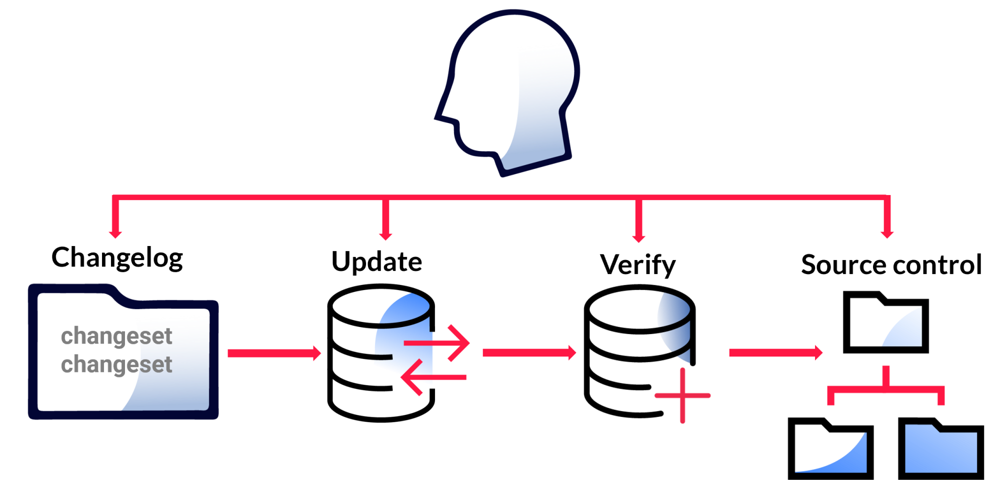

Best Practices
To help you maximize the effectiveness and efficiency of the Liquibase workflow, we recommend that you implement the following best practices.
Changelogs
Define the directory structure
The most common way to organize your changelogs is by major release. Make certain to store changelogs in your source control, preferably near the database access code.
The following example specifies the directory com/example/db/changelog:
com
example
db
changelog
db.changelog-root.xml
db.changelog-1.0.xml
db.changelog-1.1.xml
db.changelog-2.0.xml
DatabasePool.java
AbstractDAO.javaYou can alternatively use an object-oriented design pattern by creating one changelog per object (such as a table, index, etc.) or type of object (such as all tables) and including all the object changelogs within a root changelog.
Tip: To read more best practices about structuring your changelogs, see Design Your Liquibase Project.
Set up the root changelog and the included changelog files
The root changelog file db.changelog-root.xml is passed to all Liquibase calls. Use the include and includeAll attributes to nest changelog files under a root changelog.
Liquibase supports the use of changelogs in the following formats:
- SQL – Use SQL if you are familiar with it and do not want to learn a new way to specify database changes.
- Markup – Use a markup language like XML, JSON, or YAML to accomplish any of the following tasks:
- Automate the rollback of new database objects
- Simplify the deployment a single set of changes to different types of databases
- Improve db-doc reporting
When new version files are created, update db.changelog-root.xml with the new include files.
Specify one change per changeset
Unless you are grouping several changes as a single transaction, we strongly encourage you to specify only one change per changeset. This approach makes each change "atomic" within a single transaction. Keeping your changesets modular gives you greater flexibility to control the behavior of individual changes.
Each changeset either succeeds or fails. If it fails, it can be corrected and redeployed until it succeeds. Using multiple independent changes in a single changeset introduces the risk that some changes deploy while a later change fails, leaving the database in a partially deployed state.
Define the team's changeset ID format
Choose a changeset ID that is unique within its changelog. We recommend that you use an increasing numerical sequence that starts at 1.
Document unclear or complicated changesets
Most of the time, changesets are self-documenting. When a changeset requires additional information or explanation, use <comments> tags.
Plan a rollback strategy
Use the mechanism for your specific changelog format to explicitly state your rollback instructions. Make certain to test your rollback logic early during the planning process.
To ensure safe and predictable rollbacks, test them in a development environment before running them in production.
Manage your reference data
Leverage Liquibase to manage your reference data. For example, Liquibase contexts help you target specific environments when you need to complete the following tasks:
- Deploy test data to QA environments only
- Deploy data fixes to pre-production and production environments
- Manage application configuration data
Stored logic
After a changeset is applied to an environment, Liquibase never applies the same changeset to that same environment unless you override its default values. When you use Liquibase to update stored logic objects like procedures and functions, the following options are available:
- Add
roll forwardchangesets to the end of the changelog.Note: This approach might create multiple changesets in the changelog. Additionally, multiple files might be required to manage the various states of the stored logic objects.
- Recommended: Maintain a separate, stored logic-specific changelog file that satisfies the following criteria:
- Features a generic name, like
changelog-rerunable.xml - Always runs last during the run order
- Features a generic name, like
When stored logic objects reside within a separate changelog, you do not need to revisit earlier release files every time an object changes. By running the changelog at the end of the run order, the stored logic objects remain outside the typical flow, reducing the chance of encountering an error.
Stored logic behaves more like application code than a database schema change. Stored procedures, functions, packages, and triggers are better managed similarly to source code, where continuous updates are made to a single source file for each unit of stored logic. Use this approach with standard Git tools to detect changes over time.
To deploy changes only when a changelog file is modified, ensure the following criteria are satisfied:
- Your stored logic includes a
CREATE OR REPLACEstatement.Note: If your database does not support
CREATE OR REPLACE, you might need to explicitly drop an object, if it exists, and follow it up with a separateCREATEstatement. - The changeset attribute
runOnChangeis set to"true".
When Liquibase detects a modification to a stored logic changeset that was applied during a previous update, it uses the new object definition to apply the changeset again.
Developer workflow
Use the following workflow to develop software:
- Use your favorite IDE or editor to create a local changeset that contains the change.
- Enter
liquibase updateto run an update with the new changeset. - Make the corresponding changes in the application code.
- Test the new application code together with the database change.
- Commit both the changeset and the application code to source control.

Consider Liquibase Pro or Liquibase Enterprise
Liquibase Pro
Liquibase Pro supports stored logic, enables targeted rollbacks, and provides additional customer support. You can get a free 30-day trial for Liquibase Pro.
Liquibase Enterprise
Liquibase Enterprise is a commercial product that builds upon core Liquibase functionality. Beyond versioning and managing database changes, Liquibase Enterprise bridges the gap between development and operations with the following features and capabilities, all of which help to enable a fully unified and automated path for database code:
- Web interface, command line interface, and REST API. All interfaces are secure and require authentication.
- Automatic verification of database code against organizational standards, thereby reducing or eliminating the need for manual reviews.
- Automatic generation of changesets from validated DDL code, reducing or eliminating the need to craft changesets and update changelogs manually.
- Generation of unchangeable artifacts for database code, ensuring consistent, repeatable, and automation-ready downstream deployments.
- Impact forecasting of database changes with an object-based model of the target database, thereby preventing errors or issues when deploying changes.
- Basic integration with ticketing systems like JIRA, which facilitates the tracing of database changes to source code and initial requirements. This capability also simplifies the processes of holding and accelerating feature sets.
Related links
- strict – A global argument that specifies whether Liquibase enforces certain best practices and proactively looks for common errors